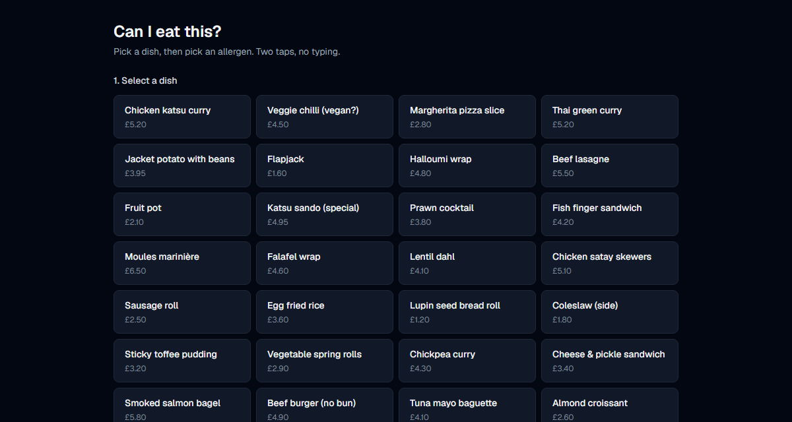
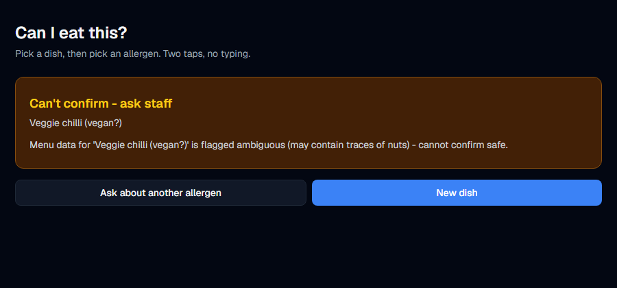
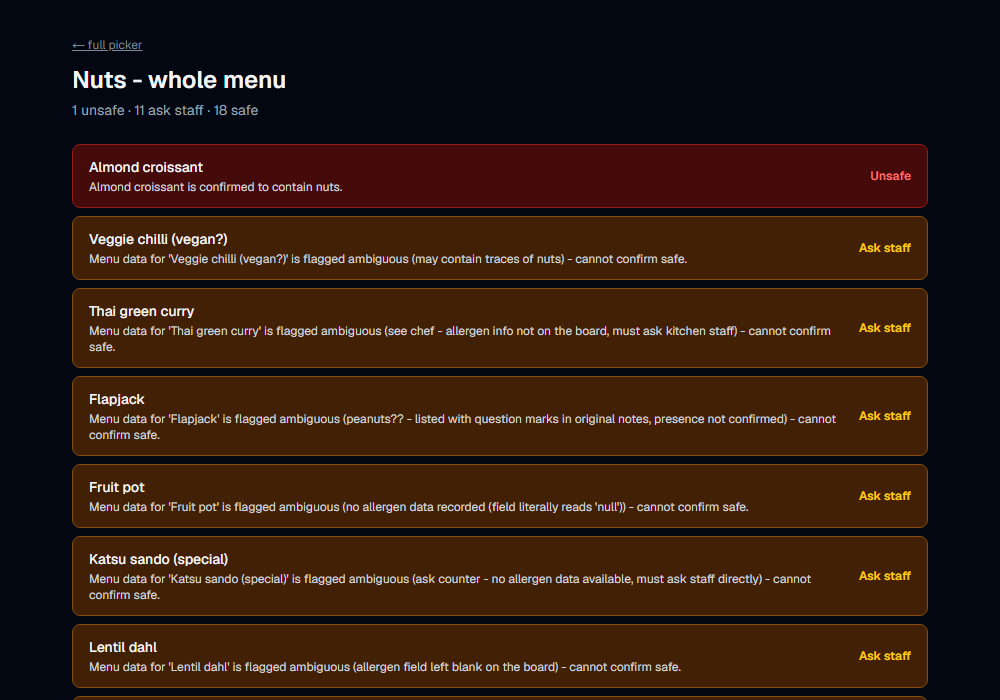
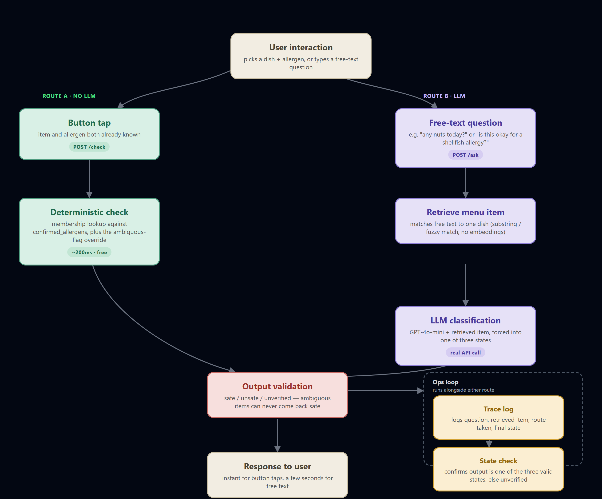
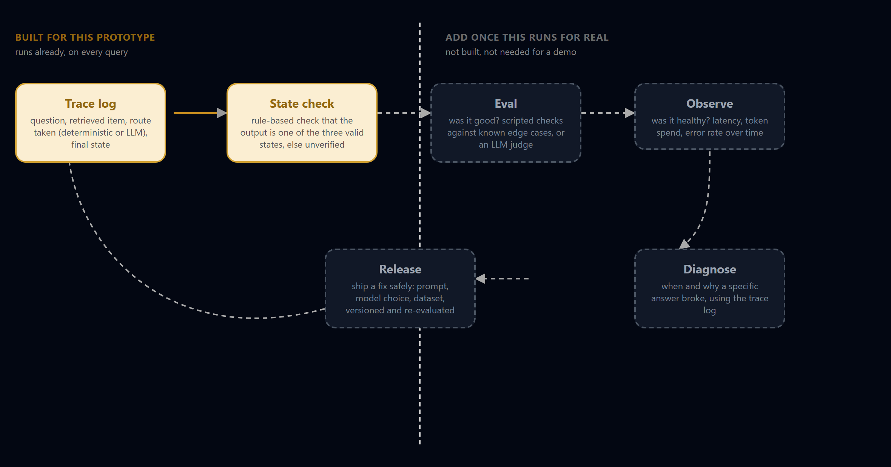

Can I eat this? — Compass Group AI Engineer pre-work
Priya has a severe nut allergy. The menu is a laminated sheet. The allergen folder is behind the counter. The server started Monday.
She has about thirty seconds to decide if lunch is safe.
Seyi Bello · a two-tap allergen check for that exact moment
The problem
This is the brief's own starter menu, not invented. A server who started Monday can't parse this in thirty seconds. Neither should an AI have to guess.
The design
Confirmed clean against the allergen asked about.
Confirmed to contain it.
Data is ambiguous or missing. Never guessed as safe.
Not a confidence score. A score just moves the guessing problem onto someone with thirty seconds, not the time to interpret "72% safe." "Ask staff" is the correct answer whenever the data itself doesn't support a claim of safe, and it can never be silently overridden.
Live demo


Built for the counter, not just the queue

Technology choices

Button taps skip the LLM entirely, a dict lookup under 200ms. GPT-4o-mini only runs for free-text questions.
The questions I expect to defend
What I'd build next
Back to Priya
Including "ask staff" when that's the truth.
Questions?

What's built today (trace log, state check) versus the full evaluate/observe/diagnose/release loop, deliberately not built yet, that's solving a maintenance problem this prototype doesn't have.